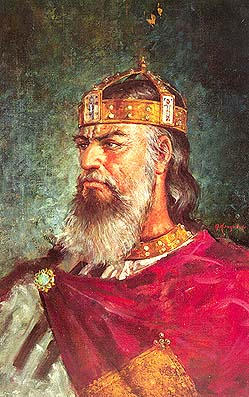

Првите почетоци на училиштето се во училишната зграда во ОУ. Гоце Делчев- Ресен на улица Мите Трпевски бр. 42 во централното градско подрачје. Името под кое работеше гимназијата е Стив Наумов. Објектот е изграден од цврст материјал во 1957 година. Тоа е објект составен од приземје и два ката. Од учебната 1978/79 година Училишниот центар за стручно образование на земјоделски кадри се интегрира со Гимназијата во Ресен, во Центар за средно образование Јосип Броз Тито со гимназиски и лозаро-овоштарски паралелки. Со интеграцијата, која се реализира во 1978 година, училишната зграда, економијата и дел од механизацијата,сопственост на Центарот, беа префрлени како основни средства на ,,Агроплод,,. Новата воспитно-образовна институција училишниот центар ,, Јосип Броз Тито,, доби нови простории – бившата касарна, која за таа цел беше адаптирана за изведување на воспитно-образовниот процес. За изведување на практичната настава, Центарот доби и нова економија околу училишната зграда. ,,Агроплод,, како организација што ја користи економијата на бившиот центар, се обврзува на постојните овоштаро-лозарски и идните паралелки да им овозможи да ги користат производните објекти за практична настава и др. потреби.
Училишниот центар во својот состав ги има следниве форми на стручно образование на земјоделски кадри : - Паралелки за стручно образование на земјоделци од овоштарско-градинарска насока, со траење од една година - Паралелки за квалификувани земјоделски работници од овоштарско-градинарска насока во траење од 2 години и - Паралелки за техничари од овоштарско-лозарската насока во траење од 4 четири години. Треба да се одбележи дека учениците што го завршуваа двегодишното училиште,скоро сите го продолжуваа образованието за земјоделски техничари. Уписот на учениците се регулира со конкурс. Вкупниот број на учениците во учебната 1981/82 година е 500,од кои овоштаро-лозари 167 и гимназијалци 337.
Во рамките на Гимназијата „Стив Наумов“ во 1960 за прв пат е отворена гимназиска паралелка која работи по наставна програма со општи гимназиски предмети. Со зголемувањето на бројот на ученици и паралелки, се дели на природно научна и општествено - јазична насока. Во рамките на овие насоки наставата се изведува по општообразовни предмети и по два предмет во прилог на насоката. Со верификациониот акт од 1985 година и промената во Училишен Центар за Средно Образование „Јосип Броз Тито“ тогашниот Републички комитет за образование и физичка култура - Скопје воведе насоки кои беа во согласност со економските и политичките состојби во државата и општината. Истата година почнаа да работаат: - прехрамбена насока - прехрамбен техничар; - правна насока за правен техничар; - математичко – информатичка насока - информатичар; - економска насока – економист за книговодствено финансиска работа и економски техничар; - текстилна струка за конфекционер ; Предметите во наставните програми се општообразовни и стручни во зависност од струката Формирањето на паралелките до периодот на 1992 година зависело од заинтересираноста за одредена струка. Со нов Акт за верификација од 1992 година за гимназиско образование Министерството за образование и физичка култура – Скопје ги воведува општа и природно – математичка гимназија со предмети кои се изучуваат во двете насоки како општообразовни и предмети кои ги надополнуваа двете насоки. Во учебната 2004/05 година започна настава по нова Верификација за гимназиско образование која функционира до денес во рамките на сегашното Средно општинско училиште „Цар Самоил.“.
Компјутерска училница 2006 Според оваа наставна програма во прва и во втора година сите ученици ги изучуваат истите општообразовни предмети, додека во трета и четврта се делат на подрачјата: • природно –математичко , комбинација А и комбинација Б. По оваа програма покрај општообразовните се опфаќаат комбинација на изборни предмети со кои ученикот добива базични знаења за успех на Електротехничките, Машинските и Природно – математичките факултети, Медицински, Ветеринарен, Технолошки и др. • општествено – хуманистичките подрачја, комбинација А и Б се наменети за ученици кои покажуваат афинитети кон Економски, Правен, одредени подрачја на Филозофски факултет. • Јазично – уметничкото подрачје , комбинациите А и Б се појдовна основа за започнување на филозофските, Филолошките, Педагошките, како и факултетот за Драмска, Ликовна и Музичка уметност.